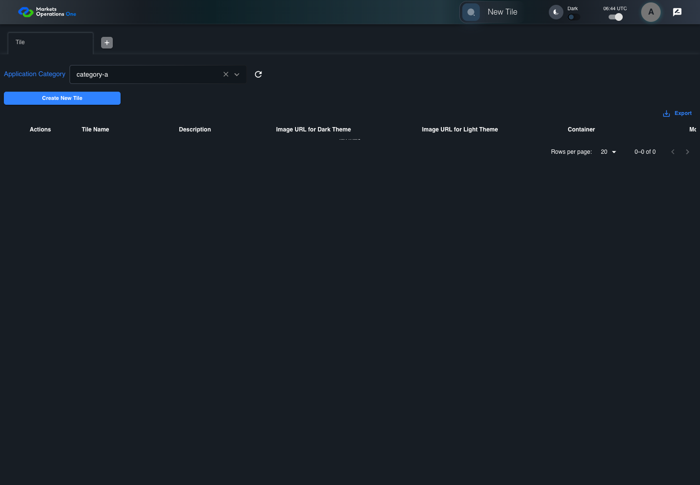
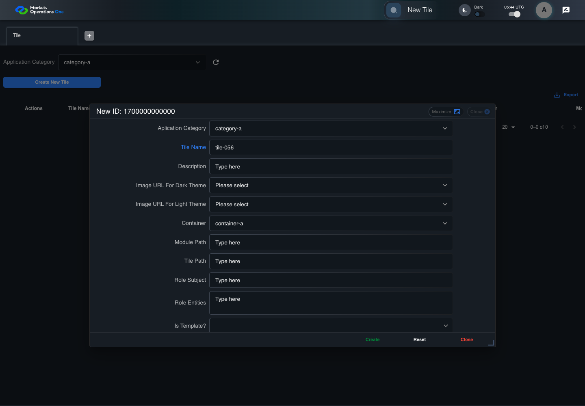
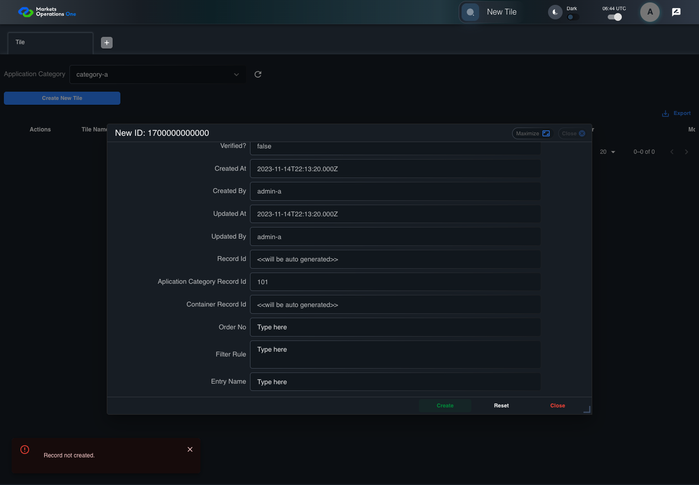

BFF-ADM-056 current BFF administration through actual UI
PASS · application/run-072/bff-adm-056-current-bff-administration-through-actual-ui-25271251c029-attempt-1 · ACTUAL_APPLICATION_LOCAL_SERVICES
Actual current React and exact-current BFF admin controllers/services/JPA with actual migration DDL in disposable PostgreSQL. Controlled OUD/EMS2 identities and local Spring bootstrap. Fixture SQL seeds/mutates isolated records; service errors are actual database errors. Undefined agreed messages remain unresolved acceptance.
2026-10-22T06:44:41.680Z to 2026-10-22T06:44:52.285Z
Assertions and result · Artifact manifest · Exact run inputs and source hashes
Result SHA-256:67bf6f452057eb5e697e243b11f2832e1638e62816535c6464a23e0b16f95c62Machine observations
- actual-identity-projection.json
2cfed371fefefb49657ae5d400823f91d29e4e425ae515c42a688fa43831d1be - baseline-inputs.json
4ca97d1a068815491002a86237c7bc49b0cb1d905d115f75840b9b7f7de32665 - bff-boundary.json
067c3873a19129a1d94488ebca5acc7074b2ae44c14ff670907dae184bcfa508 - committed-ui-submission-comparisons.json
6884a91250b5d668a92f5d09b1e9d8ec3c1f356adc0f895a71821304bc051050 - creation-clock.json
8979e4071fa099cc3865463b4f2993144eacdbcaf24d114a77d974584f0ff246 - empty-filter-rule-representation.json
229f2ef1336a4ebe62510629fdede278611b0fa5607d80887942266f19f686fb - fixture-step-10.json
84529b4b104bc244f7909510857752c2bd47c44b738c409a79a61f2cfbe3c528 - fixture-step-11.json
9934ff4e708bb48880fcbcc31dc834f05fd2f1a83cfc277268e3645abba10ba7 - fixture-step-6.json
8917ec9ef9ca72766828104afb2b6826ccb67f30f18df396fe453b7f7b3f7cb9 - fixture-step-7.json
9c0113babf235ed3b990d3f6fd55748f703bb17d84c84ef4f5279bcc7dbb062d - fixture-step-8.json
131c6d484bf5f25e8f0c3baad1d2ee2d849af3359003b990a6c844ca8e93344d - fixture-step-9.json
89fb1667d4df2aa857fd88139f6d4dbeaf6037d8e71904f39c0f0248a2ee7147 - initial-persisted-records.json
7de73b134be902cdf1074d674a72ca55709e7349dc292e486715b9767b54a24b - persisted-after-submit.json
7493a08201a1940250a3d31056aebb8aab7924bc9a9b99800aa4a12455eefa94 - reference-snapshot-3.json
fba1054d3c623205a942f4d76ec3719bdbc6534f1cd785d7b14d59070217d9aa - reference-snapshot-4.json
5531c1460faabd620b50d5a0a82cc40d779aadda9a67d27b1b57d784e9602d8a - ui-origin-bff-requests.json
b8afeb77148daa7773eb1812ff01681f81ce673a99a1aa107178a72c543dd40e
Screenshot capture: CAPTURED. Named frames: 25.
Step screenshot evidence: COMPLETE. 24/24 canonical steps have execution screenshots.
Canonical step timeline
Given Admin A uses subject "admin-a" with role "FMO_ADMIN" in an isolated authenticated browser
Execution: PASSED.
1. step-01 Visible state after step 1: Given Admin A uses subject "admin-a" with role "FMO_ADMIN" in an isolated authenticated browser
2026-10-22T06:44:44.958Z · 1440×1000
Step: /Users/lushevol/code/github/ratan-release-impact/workbench/tasks/ui-test-coverage-20261022/test-cases.md:17084
SHA-256:c1a5c332c82c22f589880368a63b5badb9b4e34ed98f454be02b74421997b576And the controlled Tile fixture records the initial grid rows and persisted values
Execution: PASSED.
2. step-02 Visible state after step 2: And the controlled Tile fixture records the initial grid rows and persisted values
2026-10-22T06:44:45.117Z · 1440×1000
Step: /Users/lushevol/code/github/ratan-release-impact/workbench/tasks/ui-test-coverage-20261022/test-cases.md:17085
SHA-256:ab873c0c0e7d9f00ff43c75e4b19e5a1398b0ce1ce66d2228313f1cc400fb4c5And Category 101 has label "category-a" and Import Map 201 has Module Name "container-a"
Execution: PASSED.
3. step-03 Visible state after step 3: And Category 101 has label "category-a" and Import Map 201 has Module Name "container-a"
2026-10-22T06:44:45.200Z · 1440×1000
Step: /Users/lushevol/code/github/ratan-release-impact/workbench/tasks/ui-test-coverage-20261022/test-cases.md:17086
SHA-256:19b61229c843abdb1eaab84fb6a4d415fcbede86d06de2d3bf5a11c5e031b10eAnd both references belong to "FMO_ADMIN" and the Tile page category filter value is Category 101
Execution: PASSED.4. step-04 Visible state after step 4: And both references belong to "FMO_ADMIN" and the Tile page category filter value is Category 101
2026-10-22T06:44:45.268Z · 1440×1000
Step: /Users/lushevol/code/github/ratan-release-impact/workbench/tasks/ui-test-coverage-20261022/test-cases.md:17087
SHA-256:7bbb9bbecf3edf5a03d9e698122db28af9cee2572b6aef328ffca77427da1d78And the controlled creation clock returns 1700000000000 milliseconds
Execution: PASSED.
5. step-05 Visible state after step 5: And the controlled creation clock returns 1700000000000 milliseconds
2026-10-22T06:44:45.335Z · 1440×1000
Step: /Users/lushevol/code/github/ratan-release-impact/workbench/tasks/ui-test-coverage-20261022/test-cases.md:17088
SHA-256:1d0b18f14d131a22cf9aa50234a545afd41801d3b6c74e32d4ce2f4536d68977And the baseline fixture data defines "Tile Name" as "tile-056"
Execution: PASSED.6. step-06 Visible state after step 6: And the baseline fixture data defines "Tile Name" as "tile-056"
2026-10-22T06:44:45.419Z · 1440×1000
Step: /Users/lushevol/code/github/ratan-release-impact/workbench/tasks/ui-test-coverage-20261022/test-cases.md:17089
SHA-256:4bbcddaac45ecf8673fe7f6fc4351fe34cd307600ef84bb4b80e9c51cd8d6e34And the baseline fixture data defines "Module Path" as "/fixture"
Execution: PASSED.
7. step-07 Visible state after step 7: And the baseline fixture data defines "Module Path" as "/fixture"
2026-10-22T06:44:45.484Z · 1440×1000
Step: /Users/lushevol/code/github/ratan-release-impact/workbench/tasks/ui-test-coverage-20261022/test-cases.md:17090
SHA-256:0957dbb7b0b11856e83074a3f0fc0e818396201332621fc0549922259c6a875cAnd the baseline fixture data defines "Tile Path" as "/case-056"
Execution: PASSED.8. step-08 Visible state after step 8: And the baseline fixture data defines "Tile Path" as "/case-056"
2026-10-22T06:44:45.550Z · 1440×1000
Step: /Users/lushevol/code/github/ratan-release-impact/workbench/tasks/ui-test-coverage-20261022/test-cases.md:17091
SHA-256:1eff1f31d90e24f4ca0a05545df870cc4eb7f3e9adf13037df124c1f97c90bc5And the baseline fixture data defines "Role Entities" as "E-TRADE"
Execution: PASSED.
9. step-09 Visible state after step 9: And the baseline fixture data defines "Role Entities" as "E-TRADE"
2026-10-22T06:44:45.618Z · 1440×1000
Step: /Users/lushevol/code/github/ratan-release-impact/workbench/tasks/ui-test-coverage-20261022/test-cases.md:17092
SHA-256:1bab50e881b9aa0bc23d9be6bacfc7bc36d914ab2f8a29346f81de9fac6e380aAnd the baseline fixture data defines "Filter Rule" as ""
Execution: PASSED.
10. step-10 Visible state after step 10: And the baseline fixture data defines "Filter Rule" as ""
2026-10-22T06:44:45.701Z · 1440×1000
Step: /Users/lushevol/code/github/ratan-release-impact/workbench/tasks/ui-test-coverage-20261022/test-cases.md:17093
SHA-256:948e3e88a3fe58d6bf17bf014fc0fc9a544fa89ddb3c61858eecf8885d490e2dAnd the baseline Tile references use "Aplication Category" "category-a" and "Container" "container-a"
Execution: PASSED.
11. step-11 Visible state after step 11: And the baseline Tile references use "Aplication Category" "category-a" and "Container" "container-a"
2026-10-22T06:44:45.770Z · 1440×1000
Step: /Users/lushevol/code/github/ratan-release-impact/workbench/tasks/ui-test-coverage-20261022/test-cases.md:17094
SHA-256:a541d82a8c45b40d2913847bcacb6df264176e8426ec2946f23668accb324aa0And the next BFF repository save throws a controlled database exception
Execution: PASSED.
12. step-12 Visible state after step 12: And the next BFF repository save throws a controlled database exception
2026-10-22T06:44:45.855Z · 1440×1000
Step: /Users/lushevol/code/github/ratan-release-impact/workbench/tasks/ui-test-coverage-20261022/test-cases.md:17095
SHA-256:f7524f52e608ff8774221932b9f00ca28c690f9fce3e84b7b2da763232190253When Admin A clicks the button labeled "Create New Tile" on the Tile administration page
Execution: PASSED.13. step-13 Visible state after step 13: When Admin A clicks the button labeled "Create New Tile" on the Tile administration page
2026-10-22T06:44:46.364Z · 1440×1000
Step: /Users/lushevol/code/github/ratan-release-impact/workbench/tasks/ui-test-coverage-20261022/test-cases.md:17096
SHA-256:576ca2717bb660f49df992daf5fcfc13864cf65ee27c9157aecd70c47e3ebb4fThen the dialog titled "new ID: 1700000000000" is visible on the Tile administration page
Execution: PASSED.14. step-14 Visible state after step 14: Then the dialog titled "new ID: 1700000000000" is visible on the Tile administration page
2026-10-22T06:44:47.626Z · 1440×1000
Step: /Users/lushevol/code/github/ratan-release-impact/workbench/tasks/ui-test-coverage-20261022/test-cases.md:17097
SHA-256:c7fdeda94ec76632d345592da909627112b6cebb0e79c81a96e62b8d30f6112fWhen Admin A clicks the combobox labeled "Container" in dialog "new ID: 1700000000000"
Execution: PASSED.
15. step-15 Visible state after step 15: When Admin A clicks the combobox labeled "Container" in dialog "new ID: 1700000000000"
2026-10-22T06:44:47.894Z · 1440×1000
Step: /Users/lushevol/code/github/ratan-release-impact/workbench/tasks/ui-test-coverage-20261022/test-cases.md:17098
SHA-256:242408975d5ad3fa0bf6f306b5052dde2d6635df59ff6ee23995ac0ca672bd2cAnd Admin A clicks the option labeled "container-a" in the expanded "Container" listbox for dialog "new ID: 1700000000000"
Execution: PASSED.
16. step-16 Visible state after step 16: And Admin A clicks the option labeled "container-a" in the expanded "Container" listbox for dialog "new ID: 1700000000000"
2026-10-22T06:44:48.456Z · 1440×1000
Step: /Users/lushevol/code/github/ratan-release-impact/workbench/tasks/ui-test-coverage-20261022/test-cases.md:17099
SHA-256:e37cbd6d1fad396085c0ece888a49638f039ea2639023fd22a2413483377777aAnd Admin A fills the textbox labeled "Tile Name" with "tile-056" in dialog "new ID: 1700000000000"
Execution: PASSED.
17. step-17 Visible state after step 17: And Admin A fills the textbox labeled "Tile Name" with "tile-056" in dialog "new ID: 1700000000000"
2026-10-22T06:44:48.936Z · 1440×1000
Step: /Users/lushevol/code/github/ratan-release-impact/workbench/tasks/ui-test-coverage-20261022/test-cases.md:17100
SHA-256:c1090f59a4e16cadd644193924fae7b00d57ab3f75427b66f449271a120e8c2cAnd Admin A fills the textbox labeled "Module Path" with "/fixture" in dialog "new ID: 1700000000000"
Execution: PASSED.18. step-18 Visible state after step 18: And Admin A fills the textbox labeled "Module Path" with "/fixture" in dialog "new ID: 1700000000000"
2026-10-22T06:44:49.420Z · 1440×1000
Step: /Users/lushevol/code/github/ratan-release-impact/workbench/tasks/ui-test-coverage-20261022/test-cases.md:17101
SHA-256:6cc367cddfebf16cf2032869a15d677255f2c3749676f2ea82a5d16bb1b5bdd1And Admin A fills the textbox labeled "Tile Path" with "/case-056" in dialog "new ID: 1700000000000"
Execution: PASSED.19. step-19 Visible state after step 19: And Admin A fills the textbox labeled "Tile Path" with "/case-056" in dialog "new ID: 1700000000000"
2026-10-22T06:44:49.911Z · 1440×1000
Step: /Users/lushevol/code/github/ratan-release-impact/workbench/tasks/ui-test-coverage-20261022/test-cases.md:17102
SHA-256:a6b109a77fd220656ffd327eece0e0f78cd22fadff1b6d24cb429596db2d7dafAnd Admin A fills the textarea labeled "Role Entities" with "E-TRADE" in dialog "new ID: 1700000000000"
Execution: PASSED.20. step-20 Visible state after step 20: And Admin A fills the textarea labeled "Role Entities" with "E-TRADE" in dialog "new ID: 1700000000000"
2026-10-22T06:44:50.372Z · 1440×1000
Step: /Users/lushevol/code/github/ratan-release-impact/workbench/tasks/ui-test-coverage-20261022/test-cases.md:17103
SHA-256:adad9c4a26c7c54152f3688e38c06388950a70cfbf710df464ddd8e2e78f78a4And Admin A fills the textarea labeled "Filter Rule" with "" in dialog "new ID: 1700000000000"
Execution: PASSED.21. step-21 Visible state after step 21: And Admin A fills the textarea labeled "Filter Rule" with "" in dialog "new ID: 1700000000000"
2026-10-22T06:44:50.819Z · 1440×1000
Step: /Users/lushevol/code/github/ratan-release-impact/workbench/tasks/ui-test-coverage-20261022/test-cases.md:17104
SHA-256:e22e774f95a5c4395836dd2020cc8da3062744677eed6be3e97fb9e7d5eaa2a0And Admin A clicks the button labeled "Create" in dialog "new ID: 1700000000000"
Execution: PASSED.22. step-22 Visible state after step 22: And Admin A clicks the button labeled "Create" in dialog "new ID: 1700000000000"
2026-10-22T06:44:51.124Z · 1440×1000
Step: /Users/lushevol/code/github/ratan-release-impact/workbench/tasks/ui-test-coverage-20261022/test-cases.md:17105
SHA-256:8372b61f08baba09ba7afc7f583d75bcdce2455585953729b19a46439b8ec0e3Then the alert with severity "error" in the portal snackbar contains the exact text "Record not created."
Execution: PASSED.
23. step-23 Visible state after step 23: Then the alert with severity "error" in the portal snackbar contains the exact text "Record not created."
2026-10-22T06:44:51.208Z · 1440×1000
Step: /Users/lushevol/code/github/ratan-release-impact/workbench/tasks/ui-test-coverage-20261022/test-cases.md:17106
SHA-256:62d4e5bd271294c0b6624091874e0a434e67c5350f0e406d87b75dd52d3fd445And the Tile data grid with column "Record Id" row identifiers and loaded field values equal the initial grid snapshot on the Tile administration page
Execution: PASSED.24. step-24 Visible state after step 24: And the Tile data grid with column "Record Id" row identifiers and loaded field values equal the initial grid snapshot on the Tile administration page
2026-10-22T06:44:51.377Z · 1440×1000
Step: /Users/lushevol/code/github/ratan-release-impact/workbench/tasks/ui-test-coverage-20261022/test-cases.md:17107
SHA-256:e416b504676f3331ec1fcd642735b788428e6f9f68d1582f962b6180bcaaf8fd
Additional named frames
Screenshots establish visible state only. Assertions and traces support functional claims.